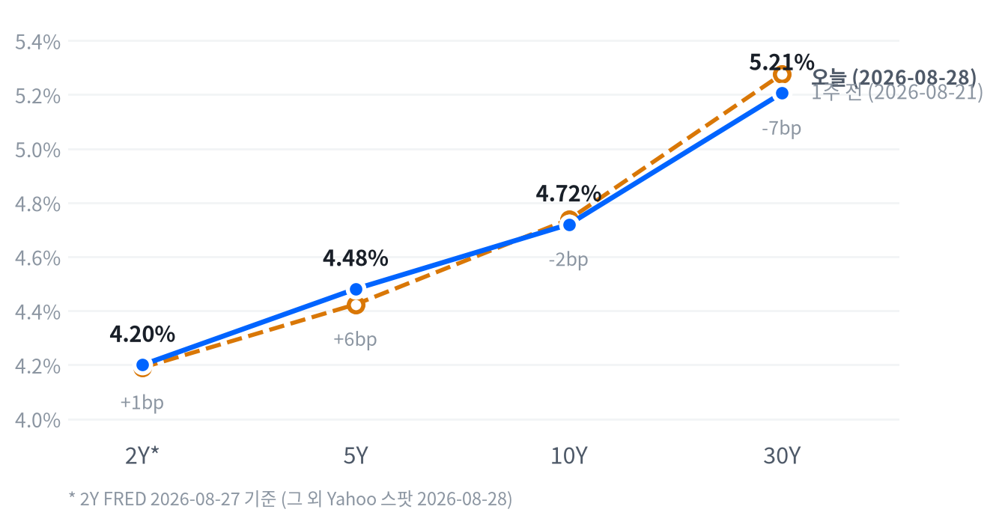

케빈 워시 신임 연준의장이 잭슨홀 심포지엄 첫 연설에서 매파적 발언을 내놓으면서 오전 한때 오르던 뉴욕증시가 오후 들어 낙폭을 키우며 하락 마감했습니다. S&P500은 0.25%, 나스닥은 0.52% 내렸고 소형주 중심의 러셀2000은 1.39% 밀려 낙폭이 가장 컸습니다.
이 발언 직후 다음 FOMC의 금리 인상 확률이 하루 만에 30%대에서 55%대까지 치솟았습니다. 동결과 인상이 사실상 반반으로 갈린 가운데 반도체·AI 하드웨어주 급락과 금 2.29% 하락이 이 재평가를 가장 뚜렷하게 반영했습니다.
하루를 지배한 것은 케빈 워시 신임 연준의장의 첫 잭슨홀 연설이었습니다. 오전에 오르던 지수가 연설 뒤 방향을 바꿔 S&P500이 0.25%, 러셀2000이 1.39% 내린 채 마감했습니다.
이 연설이 중요한 이유는 지수 등락폭이 아니라 금리 기대를 통째로 옮겼다는 데 있습니다. 다음 회의에서 금리를 올릴 것이라는 베팅이 하루 만에 30%대에서 55%대로 뛰면서, 동결이 기본값이던 자리가 반반으로 바뀌었습니다. 달러가 오르고 금이 빠진 것, 반도체와 AI 하드웨어가 함께 밀린 것이 모두 이 하나의 재평가에서 나왔습니다.
그래서 오늘 바꾸는 것은 없습니다. 2~6주 시계에서 일곱 자산군 등급을 그대로 가져갑니다. VIX는 14.43으로 축소 조건(20)과 거리가 멀고, 30년물도 확대·축소 조건(5.40%·5.05%) 사이에 그대로 머물러 있죠. 하루짜리 정책 이벤트는 이 시계의 조건을 건드리지 못했습니다.
이 판단이 틀렸다고 볼 조건은 셋입니다. 다음 세션에 VIX가 20을 넘거나, 지수가 20일선 훼손 조건(-1.0%)을 밑돌거나(오늘 -0.01%), 30년물이 5.40%를 다시 넘어서는 경우입니다. 20일선 조건은 -1.0%에서 그대로고요. 메모리·AI 인프라 바스켓의 초과수익은 각각 -4.76%p·-3.58%p로 아직 이미 열려 있던 범위 안입니다.
| 지수 | 종가 | 등락률 | 기준일 |
|---|---|---|---|
| 닛케이 | 66,131.98 | -0.20% | 2026-08-27 |
| 항셍 | 25,565.74 | -0.34% | 2026-08-27 |
| 상해종합 | 3,956.57 | +1.13% | 2026-08-27 |
| DAX | 26,367.24 | +0.31% | 2026-08-27 |
| FTSE100 | 10,792.50 | -0.79% | 2026-08-27 |
| 유로스톡스50 | 6,424.73 | -0.71% | 2026-08-27 |
| VIX | 14.43 | -0.55% | 2026-08-28 |
아시아 증시는 엇갈렸습니다. 상해종합은 1.13% 올랐지만 닛케이(-0.20%)와 항셍(-0.34%)은 내려 지역 안에서도 갈렸습니다.
유럽은 미국 쪽 전날 흐름을 이어가며 대체로 하락했습니다. DAX만 0.31% 올라 홀로 방향이 갈렸습니다. 영국 FTSE100(-0.79%)과 범유럽 유로스톡스50(-0.71%)은 나란히 내렸습니다.
야간 선물은 좁은 박스권에서 움직였습니다. S&P500 선물(ES)은 정규장 시작 전 오전 9시 7,755선에서 고점을 찍었습니다.
이후 되밀리며 늦은 저녁 7시 30분 7,727선까지 내려 하루 변동폭은 0.36%에 그쳤습니다. 나스닥 선물(NQ)은 새벽 4시 29,578선에서 저점을, 오후 4시 29,708선에서 고점을 각각 기록해 변동폭은 0.44%로 역시 좁았습니다. 현물은 대체로 보합 출발했습니다 — 나스닥 -0.10%, 러셀2000 -0.01%, 지수는 +0.05%.
마감은 이날 저점권에 가까웠습니다. 지수는 일중 고저 구간의 하위 13% 지점에서, 나스닥은 11% 지점에서, 러셀2000은 사실상 최저치(0%)에서 마감했습니다. 이 저점권 경계(하위 25.0% 이하)는 최근 2,259거래일의 일중 위치 분포로 다시 잰 값입니다.
이날 장을 움직인 것은 케빈 워시 신임 연준의장의 잭슨홀 연설이었습니다. 나스닥·러셀2000·엔비디아·금과 나란히 대형주 지수도 오전 9~11시 사이 고점을 찍은 뒤 연설 소화 과정에서 매도가 심해져 오후 2시 30분 전후 저점을 기록했습니다. 오늘 시장을 가장 크게 흔든 공통 움직임은 주식군에 실려 있었고(전체 변동의 43%가량), 금리가 그다음이었습니다(20%가량). 여기에 전날 실적을 발표한 마벨의 매출 인식 시점 실망감이 반도체 낙폭을 더 키웠습니다.
S&P500은 7,711로 끝났습니다. 최근 2년을 통틀어 이보다 높았던 날은 2%밖에 안 됩니다. 나스닥과 러셀2000도 사정이 비슷해서 각각 상위 4%와 7% 안에 들어 있죠. 7월 말 조정을 되돌린 뒤로 한 달 넘게 이 언저리를 오르내리는 중입니다. 그러니 오늘 S&P500의 0.25% 하락은 여느 날 움직임의 3분의 1 수준, 방향이 꺾였다기보다 높은 데서 생긴 잔물결로 읽는 편이 맞습니다. VIX가 14.43으로 2년 중 가장 낮은 5% 구간에 있는 것도 같은 쪽을 가리킵니다.
| 지수 | 종가 | 등락률 |
|---|---|---|
| S&P500 Value | 237.29 | +0.10% |
| 다우 | 53,559.99 | -0.02% |
| S&P500 | 7,711.76 | -0.25% |
| 나스닥 | 26,402.42 | -0.52% |
| S&P500 Growth | 140.02 | -0.57% |
| 러셀2000 | 2,972.37 | -1.39% |
| 섹터 | 종가 | 등락률 |
|---|---|---|
| 통신서비스 | 112.99 | +1.42% |
| 임의소비재 | 117.21 | +1.15% |
| 에너지 | 62.68 | +0.63% |
| 필수소비재 | 85.45 | +0.43% |
| 금융 | 58.10 | +0.38% |
| 소재 | 53.18 | -0.09% |
| 헬스케어 | 171.16 | -0.24% |
| 부동산 | 44.48 | -0.40% |
| 산업재 | 177.14 | -0.93% |
| 유틸리티 | 42.73 | -1.04% |
| 기술 | 185.69 | -1.55% |
나스닥은 고점에서 시가 대비 0.69% 올랐다가 저점까지 0.59% 내렸습니다. 지수도 비슷한 궤적을 그렸습니다. 러셀2000은 개장 직후 고점(+0.10%)을 찍은 뒤 줄곧 밀려 저점(-1.38%)까지 흘러내렸습니다.
엔비디아는 개장 직후 시가 대비 0.85% 오르며 고점을 찍었지만 이후 낙폭을 키워 시가보다 4.63% 낮은 저점까지 급락했습니다. 지난 수요일 실적 발표 후 하루 만에 8.7% 급등했던 것의 되돌림 성격이 큰 가운데, 워시 발언 이후 반도체 전반에 매도가 겹치며 낙폭이 커졌습니다.
섹터별로는 기술이 홀로 1.55% 내리며 지수를 끌어내린 반면 통신서비스(+1.42%)·임의소비재(+1.15%)는 오히려 올라, 성장주 안에서도 반도체·하드웨어와 플랫폼·미디어의 방향이 갈렸습니다. 마벨(-10.28%)·코히런트(-5.48%)·루멘텀(-6.39%) 등 AI 하드웨어 그룹의 동반 급락이 기술 섹터 낙폭을 주도했습니다.
전략 해석지수가 0.25% 내린 하루 동안 그 하락의 대부분은 기술 섹터 하나가 만들었습니다. 기술의 기여도는 -0.52%포인트로 지수 하락폭을 웃돌았고, 통신서비스(+0.21%포인트)·임의소비재(+0.14%포인트)가 상당 부분을 되돌렸습니다. 소재·부동산 두 섹터는 비중이 작아 개별 기여도를 가려낼 수 없었고, 이 분해로 설명되지 않는 몫은 -0.03%포인트에 그쳤습니다.
가장 크게 밀린 것은 소형주였습니다. 러셀2000이 1.39% 내려 평소 하루 폭의 1.3배로 움직였는데, 대형주 지수의 세 배가 넘는 낙폭입니다. 금리 인상 베팅이 뛰면 조달 비용에 민감한 작은 회사가 먼저 반응하는 게 보통이죠. 오늘이 딱 그런 하루였습니다. 지수만 보면 0.25% 조정이지만 그 아래에서는 크기별로 전혀 다른 하루가 지나간 셈입니다.
한 가지 더 짚어 둘 것이 있습니다. 주식과 금리의 상관관계가 최근 -0.33으로 직전 구간(-0.70)보다 눈에 띄게 느슨해졌습니다. 「금리가 오르면 주식이 밀린다」는 전제가 예전만큼 잘 듣지 않는 구간이라는 뜻이죠. 오늘처럼 금리와 주식이 함께 움직인 날에도, 그 관계가 앞으로도 이어질 것이라고 미리 단정하기는 어렵습니다.
이날 낙폭이 저점권 마감으로 끝났다는 것은 이 조정이 장 후반까지 힘을 잃지 않았다는 뜻입니다. 대형 성장주 전반이 아니라 반도체·AI 하드웨어라는 특정 그룹에서 낙폭이 집중됐다는 점에서, 이번 조정은 지수 전체의 방향 전환보다는 밸류에이션이 가장 많이 늘어난 자리에서 먼저 빠지는 순환매로 볼 수 있습니다.
10년물 4.72%, 30년물 5.21% — 2년 중 꼭대기 부근입니다. 지난 2년 안에서 이보다 높았던 날은 각각 1%와 3%뿐이죠. 1년 내내 오른 끝에 닿은 레벨이라 여기서 더 가기도, 되돌리기도 만만치 않은 구간이죠. 오늘 10년물이 0.05%포인트 오른 건 최근 60일 평균 움직임의 1.2배입니다. 큰 발언이 나온 날치고는 크지 않은 편이죠. 30년물은 1.5bp로 사실상 제자리였고요.
| 만기 | 종가(2026-08-28) | 전일比(bp) | 1주 전 | 주간 변화(bp) |
|---|---|---|---|---|
| 2Y* | 4.20% | +1.0bp | 4.19% | +1.0bp |
| 5Y | 4.481% | +8.5bp | 4.424% | +5.7bp |
| 10Y | 4.720% | +4.8bp | 4.738% | -1.8bp |
| 30Y | 5.206% | +1.5bp | 5.276% | -7.0bp |

1주일 전 대비 5년물은 +5.7bp, 10년물은 -1.8bp, 30년물은 -7.0bp로 단기는 오르고 장기는 내려 커브가 눌리는 쪽(불 플래트닝에 가까운 움직임)으로 갔습니다. 다만 2년물의 변화(+1.0bp)는 FRED 기준일이 하루 늦어 같은 잣대로 보기 어렵습니다.
단기와 장기의 금리차(2년물과 10년물)는 52.0bp입니다. 2년물은 FRED 2026-08-27, 10년물은 Yahoo 2026-08-28 기준이라 날짜가 다르고, 같은 날짜의 FRED 기준으로 보면 47.0bp로 좁아집니다.
두 값의 차이는 하루 시차에서 비롯된 것이라 이 폭을 하루치 커브 변화로 읽으면 안 됩니다. 당일 커브 모양은 5년물과 30년물 스프레드(모두 Yahoo 동일자 기준) 72.5bp로 보는 편이 정확합니다.
왜 금리가 움직였나국채 금리는 실질금리와 기대인플레로 나뉩니다(둘을 더하면 명목금리가 됩니다). FRED 동일자 기준(2026-08-27)으로 보면 10년물의 하루 변화(+1.0bp)는 실질금리·기대인플레 모두 유의미하게 움직이지 않은 결과였습니다. 이는 표에 있는 Yahoo 스팟 기준 하루 변화(+4.8bp)와는 날짜·산출 방식이 달라 그대로 비교할 수 없습니다.
1주일로 보면 10년물 명목금리는 -2.0bp 내렸는데, 이 중 실질금리가 -1.0bp, 기대인플레가 -1.0bp씩 나눠 설명합니다. 5년물은 하루 기준 명목금리 +1.0bp가 전부 실질금리 몫(+1.0bp)이었고 기대인플레는 그대로였습니다.
10년물 기간프리미엄(만기가 길수록 더 얹어 받는 값)은 0.87%로 최근 1주일 사이 2.9bp 올랐습니다. 실질금리 자체는 크게 움직이지 않았는데 기간프리미엄이 오른 것은, 성장 기대보다 국채 수급·불확실성 프리미엄이 최근 금리 상승의 배경에 가깝다는 뜻입니다. 신용 스프레드는 오히려 좁아져 하이일드는 2.63%로 1주일 새 12bp, 투자등급은 0.79%로 3bp 줄어 위험 선호 자체는 견조합니다.
시장에서 포워드 5y5y라 부르는, 먼 미래 구간만 따로 떼어 본 장기 기대금리는 명목 4.96%, 실질 2.61%입니다(2026-08-27 기준). 물가 기대가 여전히 2%대 중반에 단단히 자리 잡고 있다는 뜻입니다.
듀레이션 전략30년물이 근래 최고 수준인 5.206%에서 벗어나지 못하는 한, 장기물을 서둘러 늘릴 자리는 아닙니다. 이 레벨이 뚫리는지가 다음 국면을 가르는 분기점이고, 그때까지는 짧은 만기 쪽이 편한 구간입니다. 주식과 금리의 상관관계는 최근 -0.33으로 직전(-0.70)보다 느슨해져, '금리가 오르면 주식이 밀린다'는 전제를 예전만큼 강하게 쓰기는 어렵습니다.
DXY 99.68은 최근 2년 중 딱 절반 지점입니다. 이보다 높았던 날도 낮았던 날도 반씩이니, 레벨만 보면 강하지도 약하지도 않죠. 그런데 오늘 하루는 달랐습니다. 0.52% 상승은 여느 날의 1.8배였고, 오늘 이만큼 크게 움직인 자산이 없습니다. 달러/엔은 160.04까지 올라 2년 상위 8%에 들어갔고, 원/달러는 반대로 아래쪽 13% 구간에 머물러 있습니다.
이유는 하나로 모입니다. 워시 의장의 매파 발언에 금리 인상 베팅이 30%대에서 55%대로 뛰었고, 미국 금리가 다른 나라보다 더 오래 높게 갈 것이라는 쪽으로 기대가 옮겨갔죠. 위험 회피는 아닙니다 — 그랬다면 엔화가 같이 강해졌을 텐데 달러/엔은 오히려 0.49% 올랐으니까요. 금리차가 만든 방향으로 보는 게 맞습니다.
| 통화 | 종가 | 등락률 |
|---|---|---|
| DXY | 99.677 | +0.52% |
| USD/KRW | 1,375.67 | -0.57% |
| USD/JPY | 160.038 | +0.49% |
| EUR/USD | 1.1587 | -0.58% |
달러/엔은 새벽 저점(시가 대비 -0.04%)에서 저녁 고점(+0.53%)까지 꾸준히 올라 160엔 선에 안착했습니다.
전략 해석달러 강세(DXY +0.52%)를 만든 것은 위험 선호 변화가 아니라 금리차 그 자체입니다. 워시 신임 연준의장의 매파적 발언 이후 다음 FOMC의 금리 인상 확률이 급등하면서, 미국과 다른 나라의 정책금리 격차가 벌어질 것이라는 베팅이 달러를 밀어올렸습니다. 다만 달러/원은 오히려 0.57% 내려(원화 강세) 달러 전반의 흐름과 엇갈렸는데, 이 개별 배경은 이번 리서치로는 확인되지 않았습니다.
WTI 83.44달러, 금 4,504달러. 레벨로는 둘 다 높은 편이어서 2년 상위 17%와 19%에 각각 자리합니다. 그런데 오늘은 서로 반대로 갔습니다. WTI는 0.11% 내려 거의 멈춰 있었습니다 — 여느 날 움직임의 0.03배죠. 금은 2.29% 빠져 그 1.4배로 움직였고요. 이번 주 내내 사상 최고를 새로 쓰던 금이 잭슨홀이 끝나자마자 되밀린 하루입니다. 통화정책 재평가가 금에는 바로 닿고 원유에는 거의 안 닿는다는 걸 하루 만에 보여준 셈이죠.
| 품목 | 종가 | 등락률 |
|---|---|---|
| WTI | $83.44 | -0.11% |
| Brent | $88.29 | -1.57% |
| 천연가스 | $2.881 | -0.89% |
| 금 | $4,504.10 | -2.29% |
금이 왜 이렇게 빠졌는지는 하루의 순서를 따라가면 보입니다. 이번 주 내내 금을 사 모은 이유는 잭슨홀이 어떤 말을 할지 몰라서였죠. 그 말이 나오고 방향이 매파로 정해지자, 불확실성을 사 두던 수요가 한꺼번에 풀렸습니다. 여기에 달러가 오르면서 금을 들고 있는 비용까지 커졌고요. 두 힘이 같은 방향으로 겹친 하루입니다.
반대로 유가는 거의 반응하지 않았습니다. WTI는 0.11% 내려 평소 하루 폭의 0.03배, 사실상 멈춘 수준이었습니다. 통화정책 재평가가 원유 수급을 당장 바꾸지는 않으니까요. 이번 주 유가를 움직인 것은 연준이 아니라 이란을 둘러싼 긴장 완화였고, 그 재료는 주 초에 이미 반영을 끝냈습니다.
금은 오전 한때 시가 대비 1.20% 오른 고점을 찍었다가 낙폭을 키워 시가보다 2.96% 낮은 저점까지 급락했습니다. WTI는 오전 저점(-1.02%)에서 낮 고점(+0.73%)까지 좁게 오간 뒤 거의 보합으로 마감했습니다.
전략 해석브렌트(-1.57%)가 WTI(-0.11%)보다 훨씬 크게 내리면서 브렌트의 WTI 대비 프리미엄이 좁아졌습니다. 이는 수요보다 공급 쪽 재료 — 국제 벤치마크에 반영돼 있던 지정학 프리미엄이 옅어지는 쪽에 가깝습니다.
금은 2.29% 내려 오늘 원자재 가운데 가장 크게 움직였지만, 평소 변동성 대비로 보면 '보통' 수준에 그칩니다. 워시 발언으로 금리 인상 베팅이 급등하면서 실질금리 상승 기대를 자극해 금 보유 비용을 높인 결과로 보입니다. 다만 최근 60거래일 기준 금과 금리의 상관관계는 -0.09로 예전(-0.46)보다 크게 느슨해져, 금리만으로 금의 움직임을 설명하기는 어려워졌습니다.
미국 경제는 냉각 국면을 유지합니다. 성장 쪽은 여전히 둔화 방향이고 물가 쪽은 교착 상태입니다 — 좌표로는 냉각입니다.
성장축 점수는 -0.341로 둔화 컷포인트 아래에 그대로 머물러 있습니다. 물가축 점수는 -0.391로, 오늘 새로 반영된 미시간대 소비자심리·기대인플레 지표까지 더해지며 사실상 둔화 경계를 넘어섰습니다 — 점수만 보면 다음 국면인 연착륙 쪽을 가리킵니다.
국면이 냉각으로 바뀐 지 사흘째입니다. 최소 5영업일은 지나야 다시 움직일 수 있어, 오늘 지표가 다른 쪽을 가리켜도 국면은 그대로입니다.
고용은 보합에 가깝습니다. 일곱 개 중 넷이 개선 쪽이었습니다.
| 지표 | Actual | Forecast | Previous | 발표일 | 추세 |
|---|---|---|---|---|---|
| 구인건수(JOLTS) | 7,359천 건 | — | 7,537천 건(6월) | 기준월 6월(7월 말 발표) | 개선(완만) |
| 신규 실업수당 청구 | 20.3만 건 | — | 20.7만 건 | 2026-08-27 | 보합(미미) |
| 신규 청구 4주 평균 | 20.55만 건 | — | 20.425만 건 | 2026-08-27 | 개선(뚜렷) |
| 계속 실업수당 청구 | 177.8만 건 | — | 179.6만 건 | 2026-08-27 | 개선(미미) |
| 비농업 고용 증감 | -2.3만 명 | — | +2.0만 명 | 기준월 7월 | 악화(완만) |
| 실업률 | 4.1% | — | 4.2% | 기준월 7월 | 개선(미미) |
| 시간당 임금(전월비) | +0.05% | — | +0.29% | 기준월 7월 | 악화(완만) |
생산·활동은 악화 쪽입니다. 다섯 개 중 하나만 개선이었습니다.
| 지표 | Actual | Forecast | Previous | 발표일 | 추세 |
|---|---|---|---|---|---|
| 산업생산(전월비) | +0.20% | — | +0.27% | 기준월 7월 | 악화(완만) |
| 내구재 주문(전월비) | +1.07% | — | +0.54% | 기준월 7월 | 악화(뚜렷) |
| 신규주택 판매 | 60.7만 채 | — | 67.8만 채 | 기준월 7월 | 보합(미미) |
| 기존주택 판매 | 406만 채 | — | 413만 채 | 기준월 7월 | 개선(완만) |
| 실질GDP 성장률(연율) | +1.5% | — | +2.1% | 기준월 4월(1분기 확정치 계열) | 보합(미미) |
소비는 악화 쪽입니다. 두 지표 다 나빠졌습니다.
| 지표 | Actual | Forecast | Previous | 발표일 | 추세 |
|---|---|---|---|---|---|
| 소매판매(전월비) | -0.58% | — | +0.25% | 기준월 7월 | 악화(뚜렷) |
| 미시간대 소비자심리(7월, FRED) | 55.2 | — | 49.5(6월) | 2026-08-28 | 악화(완만) |
물가는 둔화 쪽입니다. 여덟 개 중 셋이 뚜렷하게 식었고 다섯은 완만하게 재가속했습니다.
| 지표 | Actual | Forecast | Previous | 발표일 | 추세 |
|---|---|---|---|---|---|
| CPI 전년비 | 3.54% | — | 3.73% | 기준월 7월 | 재가속(완만) |
| CPI 전월비 | +0.07% | — | -0.42% | 기준월 7월 | 둔화(뚜렷) |
| 근원 CPI 전년비 | 2.79% | — | 2.81% | 기준월 7월 | 교착(미미) |
| 근원 CPI 전월비 | +0.22% | — | -0.02% | 기준월 7월 | 둔화(완만) |
| PPI 최종수요(전월비) | -0.03% | — | -0.11% | 기준월 7월 | 둔화(뚜렷) |
| PCE 물가 전년비 | 3.70% | — | 3.72% | 기준월 7월 | 재가속(완만) |
| 근원 PCE 전년비 | 3.34% | — | 3.34% | 기준월 7월 | 재가속(미미) |
| 미시간대 1년 기대인플레(7월, FRED) | 4.2% | — | 4.6%(6월) | 2026-08-28 | 재가속(완만) |
무엇이 나왔나 미시간대 서베이(U. Michigan)가 오늘 8월 최종치를 발표했습니다. 소비자심리지수는 51.7로 7월 55.2보다 6.3% 낮아졌고, 1년 기대인플레이션은 4.2%에서 4.0%로 내렸습니다.
무엇이 그것을 만들었나 미시간대는 향후 1년 기업경기 기대가 10% 꺾이고 5년 기업경기 기대는 13% 급락했다고 직접 밝혔습니다. 소비자들이 휘발유 가격이 단기·장기 모두 더 오를 것으로 내다본 점도 심리 하락의 배경으로 꼽혔습니다.
그래서 어떻게 볼 것인가 기대인플레가 조금 낮아졌어도 이란 사태 이전(3.4%)이나 2024년 평균은 여전히 크게 웃돕니다. 가계의 물가 눈높이가 높은 채로 굳었다는 뜻이죠. 심리 급락과 겹쳐 소비축·물가축 진단을 함께 뒷받침합니다.
정책 경로 판단은 오늘 흔들렸습니다. 어제까지 이 책에 담겨 있던 '다음 FOMC 동결 우세' 판단은 케빈 워시 신임 연준의장의 잭슨홀 연설 이전 스냅숏이었습니다.
워시는 "금융여건이 충분히 제약적이지 않다"며 인상 가능성을 시사했습니다. 그러자 CME FedWatch 기준 다음 FOMC의 인상 확률이 하루 만에 30%대에서 55.7~57.5%로 뛰었습니다(매체별 편차). 동결은 44% 안팎으로 밀려, 둘이 사실상 반반이 됐습니다.
그래서 다음 FOMC는 동결과 25bp 인상이 팽팽히 맞서는 구도로 봅니다. 이 판단은 8월 소비자물가(CPI)가 컨센서스를 밑돌거나 다른 연준 위원이 완화 쪽으로 되돌아오면 무효화됩니다.
물가가 식으면 실질금리가 정점을 지난다는 그림, 그 그림이 채권과 금을 같이 떠받칩니다. 오늘 이 판단을 흔든 것은 없었습니다. 근원 개인소비지출(PCE) 물가가 3.0% 아래로 더 내려가는지, 30년물이 5.05% 밑으로 내려가는지를 봅니다.
채권 포지션은 이 구조적 판단과 정반대로 갑니다. 3~6개월 시계에서는 채권 매수가 유리하다고 보지만, 2~6주 스윙에서는 30년물이 5.206%로 여전히 고점권에 머물러 있어 숏 바이어스를 그대로 유지합니다. 추세 전환이 실제로 확인되기 전까지는 구조적 판단보다 가격 자체를 우선합니다.
성장이 식는 힘과 물가가 식는 힘이 최종수요에서 서로 상쇄됩니다. 오늘도 그 균형이 깨지지 않았습니다.
흔들릴 조건은 둘입니다. ISM 제조업 구매관리자지수(PMI)가 50을 넘는 재가속을 이어가거나, 10년물이 4.5% 아래로 내려가는 경우죠.
실질금리 격차가 좁아지면 달러가 약해진다는 것이 3~6개월 그림입니다. 오늘 달러는 그 반대로 갔지만(수치는 FX 섹션에 있습니다) 하루짜리 반응으로 봅니다. DXY의 20일 흐름이 -3% 이상 더 밀리거나 FedWatch의 인하 확률이 다시 커지면 이 그림이 재확인됩니다.
인공지능 데이터센터 투자는 위 지표들과 사실상 따로 움직입니다. 소비나 물가 진단이 흔들려도 하이퍼스케일러의 설비투자 계획은 그대로이기 때문입니다.
마벨(-10.28%)의 급락도 사이클 자체보다 매출 인식 시점 문제로 봅니다. 30년물이 5.4%를 넘어 더 오르거나 하이퍼스케일러의 3분기 설비투자 가이던스가 나오면 다시 점검하죠.
오늘 미시간대 발표 자체에 대한 채권·주식의 반응은 뚜렷하게 갈라내기 어려웠습니다. 같은 날 케빈 워시 신임 연준의장의 잭슨홀 연설이 워낙 큰 재료였기 때문입니다.
시장은 미시간대 발표를 물가 안도 재료로 받아들이지 않았습니다. 워시의 매파 발언이 워낙 컸습니다.
가장 큰 분기점은 다음 FOMC 금리 결정입니다. CME FedWatch 기준 인상 확률이 55.7~57.5%로 동결과 팽팽히 맞서 있어, 결과에 따라 정책 경로 판단이 바로 갈릴 수 있습니다.
8월 소비자물가(CPI, 통상 9월 중순 발표)도 핵심 분기점입니다. 헤드라인 전월비가 0.3% 이상으로 재가속하면 지금의 인상 리스크 재평가에 무게가 더 실립니다.
8월 비농업 고용(통상 9월 첫째 주 금요일 발표)도 지켜볼 지표입니다. 7월 -2.3만 명으로 위축 전환한 뒤라, 8월치가 다시 마이너스면 성장축 점수가 추가로 낮아질 수 있습니다.
어제 걸어둔 트리거는 오늘도 대부분 충족되지 않았습니다. 주식의 확대 조건이던 S&P500의 50일선 4% 상회는 1.96%에 그쳤고, 11개 섹터 전부 1개월 플러스 조건도 8개에 머물러 소폭확대를 그대로 유지합니다.
채권은 30년물이 5.206%로 확대 트리거(5.40%)와 축소 트리거(5.05%) 사이 어느 쪽에도 닿지 않아 숏 바이어스를 유지합니다. 금은 5일 수익률이 -2.6%로 축소 트리거(-4.0%)까지는 아직 거리가 있어 비중확대를 그대로 가져갑니다.
오늘 워시 발언이 만든 급변동에도 불구하고 등급을 옮길 근거는 없었습니다. 메모리(20일 초과수익 -4.76%포인트)와 AI 인프라(5일 초과수익 -3.58%포인트) 모두 이미 열려 있던 중립 범위 안에서 움직였을 뿐입니다. 일곱 자산군 전부 오늘도 유지가 결론입니다.
여기서 한 가지를 분명히 해 둘 필요가 있습니다. 오늘처럼 큰 뉴스가 나온 날에 아무것도 바꾸지 않는 것은 판단을 미룬 것이 아니라 판단의 결과입니다. 이 표의 시계는 2~6주이고, 하루짜리 정책 이벤트가 그 시계의 조건을 건드리지 못하도록 문턱을 애초에 그렇게 잡아 뒀죠. 뉴스의 크기와 포지션 변경의 필요는 별개입니다.
다만 오늘 움직임 중 하나는 다음 주에 다시 볼 값입니다. 달러가 평소의 1.8배로 움직여 오늘 자산군 가운데 가장 컸는데, 달러 관련 조건은 20일 흐름을 기준으로 걸어 뒀기 때문에 하루치 급등은 그 조건에 잡히지 않습니다. 이런 날이 사나흘 이어지면 그때는 20일 흐름 자체가 바뀌고, 그 시점에 조건이 열리죠. 오늘은 그 전 단계입니다.
| 자산군 | 등급 | 유지 | 전일대비 | 논거 | 다음 분기점 |
|---|---|---|---|---|---|
| 주식 | 소폭확대 대형 성장주 선별, 소재·헬스케어·소형주·가치주 확대 | 6영업일 | 유지 | 상승 업종 확산이 아직 완전하지 않은 채로(1개월 플러스 섹터 8개) 상승세가 이어지고 있어 소폭 비중 확대를 2~6주 시계에서 유지합니다. | S&P500 50일선 4% 상회 시 확대, VIX 20 상회 또는 20일선 -1.0% 하회 시 축소 |
| 채권 | 숏 바이어스 벨리 OW · 5Y 중심 보유 | 11영업일 | 유지 | 30년물이 5.206%로 근 20년래 고점권을 벗어나지 못해 2~6주 시계에서는 장기물 확대를 미룹니다. | 30년물 5.40% 상회 시 숏 확대, 5.05% 하회 시 축소 |
| FX | 달러 소폭 숏 엔화는 개별 요인이 커 분리 점검 | 11영업일 | 유지 | DXY의 20일 흐름이 여전히 약세권(-0.12%)이라 달러 소폭 숏을 유지합니다. | DXY 20일 -3% 하회 시 확대, 101 상회 시 축소 |
| 원자재 | 중립 · 비중확대 에너지는 지정학 프리미엄 소멸 판단, 귀금속은 이중 헤지로 비중확대 | 에너지 5영업일 · 귀금속 5영업일 | 유지 | 유가는 방향성 신호가 없어 중립을, 금은 안전자산·달러 헤지 성격이 살아 있어 비중확대를 유지합니다. | WTI 5일 +6% 시 에너지 확대·-6% 시 축소, 금 5일 -4% 하회 시 축소 |
| 메모리 | 중립 AI 데이터센터 수요는 유효, 20일 초과수익 반전으로 중립 유지 | 2영업일 | 유지 | 20일 초과수익이 -4.76%포인트로 마이너스권에 머물러 있어 OW 복귀 조건에 닿지 않습니다. | 20일 초과수익 +5.0%p 상회 시 OW 복귀, -12.0%p 하회 시 UW 검토 |
| AI 인프라 | 중립 실적 모멘텀 종목만 선별 | 11영업일 | 유지 | 5일 초과수익이 -3.58%포인트로 마이너스권에 재진입해 테마 단위 확대 근거가 약해졌습니다. | 5일 초과수익 +5.0%p 상회 시 확대, 하이퍼스케일러 캐펙스 가이던스 하향 시 UW 검토 |
정책 리스크 다음 FOMC에서 실제로 금리 인상이 결정되면, 이미 반반으로 갈린 시장 기대가 한쪽으로 쏠리며 단기물 중심으로 금리가 추가로 오르고 위험자산 전반이 흔들릴 수 있습니다. 이 경우 채권은 숏 바이어스를 더 낮추고 주식 비중도 축소 쪽으로 옮길 근거가 됩니다. 확인은 단기물부터 하는 것이 빠릅니다 — 2년물이 장기물보다 먼저 반응하기 때문입니다.
AI 밸류에이션 리스크 마벨의 급락이 보여주듯, 실적이 좋아도 매출 인식 시점이 기대에 못 미치면 반도체·AI 하드웨어 그룹 전반이 동반 조정받는 흐름이 반복될 수 있습니다. AI 인프라·메모리 모두 중립을 유지하는 이유이기도 합니다.
달러·원자재 리스크 인상 베팅이 더 굳어지면 달러 소폭 숏 포지션이 손실 구간에 들어갈 수 있고, 금 역시 실질금리 상승 기대에 추가로 눌릴 수 있습니다. DXY가 101을 넘어서면 달러·금 포지션을 함께 재점검합니다.
마벨(-10.28%) 2분기 실적은 주당순이익 0.94달러, 매출 27.4억 달러로 컨센서스를 웃돌았고 2028회계연도 매출 가이던스도 약 180억 달러로 상향했습니다. 그런데도 주가가 급락한 것은 구글 커스텀칩 딜의 실제 매출 기여가 2029회계연도에나 반영된다는 실망감 때문입니다.
AI 옵틱스 그룹 코히런트(-5.48%)·루멘텀(-6.39%)은 특정 악재보다 반도체 지수 전반의 밸류에이션 재평가에 함께 휩쓸렸습니다. AI 하드웨어 트레이드가 식으면서 이 그룹의 프리미엄도 함께 줄어들고 있습니다.
엔비디아(-4.57%) 지난 수요일 실적 발표 후 하루 만에 8.7% 급등했던 상승분의 되돌림 성격이 큽니다. 매출·주당순이익 모두 컨센서스를 웃돌았고 3분기 매출 가이던스도 1,080억 달러로 시장 전망을 넘어섰지만, 워시 발언에 따른 반도체 전반의 매도가 겹치며 낙폭이 커졌습니다.
| 종목 | 종가 | 등락률 |
|---|---|---|
| 마이크론 | $932.86 | -0.27% |
| 웨스턴디지털 | $459.45 | -0.55% |
| 시게이트 | $829.76 | -2.06% |
| 엔비디아 | $217.55 | -4.57% |
| 삼성전자 | 266,000원 | +1.72%(2026-08-27, KRX) |
| SK하이닉스 | 1,729,625원 | +2.49%(2026-08-27, KRX) |
미국 메모리주는 오늘 -0.3~-2.1%대의 완만한 조정에 그쳤지만, 한국 장에서는 삼성전자(+1.72%)·SK하이닉스(+2.49%)가 강세를 보였습니다. 한국 장 마감 시점이 미국보다 하루 앞서 있어 직접 비교는 제한적입니다.
8월 한 달 동안 메모리·스토리지 그룹은 변동성이 컸습니다. 이달 초와 중순 두 차례 5~7%대 조정이 있었는데, 금리 상승이 밸류에이션이 가장 많이 늘어난 반도체 트레이드를 압박한 결과로 보도됐습니다.
투자 관점최근 60거래일 기준으로 메모리 바스켓의 20거래일 누적 초과수익은 -3.59%였습니다. 대형-소형(사이즈) 요인은 오히려 +1.87%포인트 플러스로 기여했지만, 반도체 지수 대비 움직임이 -2.45%포인트로 짓눌러 전체를 마이너스로 돌려놨습니다. 이 두 축으로 설명되지 않는 몫은 -2.3%포인트였습니다(시장 민감도는 3.52배로 원래 변동성이 큰 바스켓이라는 점도 감안해야 합니다).
| 분야 | 종목 | 종가 | 등락률 |
|---|---|---|---|
| 반도체(커스텀 ASIC) | 마벨 | $216.62 | -10.28% |
| 광통신/옵틱스 | 코히런트 | $279.20 | -5.48% |
| 광통신/옵틱스 | 루멘텀 | $895.00 | -6.39% |
| 전력 인프라 | GE버노바 | $911.93 | -4.39% |
| 열관리·데이터센터 | 버티브 | $257.08 | -4.53% |
마벨은 실적 자체는 우호적이었지만 구글 커스텀칩 매출 인식 시점 문제로 급락했습니다. 코히런트·루멘텀 등 광통신 그룹은 AI 하드웨어 트레이드 냉각이라는 섹터 전반의 되돌림에 함께 휩쓸렸습니다. GE버노바·버티브 같은 전력·열관리 인프라 종목의 오늘 하락은 반도체·AI 하드웨어 전반의 되돌림에 연동된 것으로 보이며, 개별 재료는 이번 리서치로 확인되지 않았습니다.
투자 관점AI 인프라 바스켓은 최근 60거래일 기준으로 20거래일 누적 초과수익이 +8.17%로 여전히 시장을 앞섰습니다. 성장-가치·대형-소형·반도체 세 축의 기여를 더하면 오히려 -1.94%포인트로 마이너스였습니다(성장주 성격 +0.80%p, 대형주 열위 -1.33%p, 반도체 대비 -1.41%p). 그런데도 이 축들로 설명되지 않는 몫은 +10.12%포인트에 달했습니다. 세 스타일 축이 아니라 종목 고유의 힘이 초과수익 대부분을 만들었다는 뜻입니다(시장 민감도 3.52배).